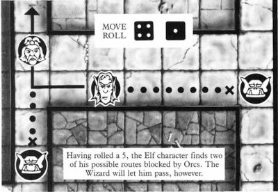
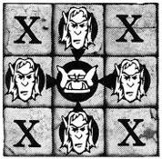
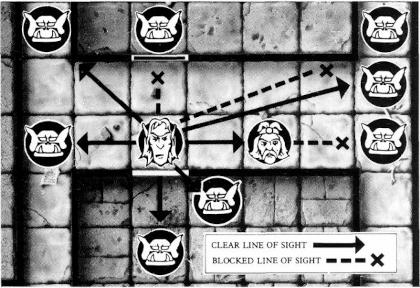

"Heed well the words of Mentor, Guardian of Loretome, and I will tell you of times past, of darker days when the Empire was saved against all hope. For I fear the darkness is about to return..."
"The fell legions of Morcar, Lord of Chaos, had swept all before them. At the sight of the Black Banner and the massed hordes of Chaos, even the bravest warriors of the Emperor had turned tail and fled, the land was laid waste and all men despaired.
"But then there came a mighty warrior Prince from the Borderlands - Rogar the Barbarian they called him. He bore a glittering diamond on his brow - the Star of the West - as worn by the ancient kings of legend. Hope returned and men flocked to his standard, leaving their hiding places in the hills and forests. Other great heroes joined him: Durgin, the fearless Dwarven warrior from the "World's Erge Mountains. Ladril the Elven fighter mage from distant Athelorn and Telor the Wizard whose sorcery was to save Rogar on many occasions.
"For many years Rogar trained his army, being careful to avoid open battle with Morcar's general until all was ready, but ever harried their supply lines, wiping out countless Orcs and Goblins.
"Then came the day for which Rogar had waited. His army had grown strong and was well practised. Camping in the high passes, Ladril saw the Black Hosts from afar and bade “Durgin blow the call to arms on his mighty horn. Rogar's army poured down upon the enemy from two sides and battle was joined. Many foul creature and good men perished that day. Yet, as the light of day faded it was Darkness that fled the field. ut the vietory was not absolute. Morcar and his general escaped beyond the Sea of Claws, and even now they plot their revenge. Soon their plots will be ready and the Empire will have need of a new Rogar. “But where are the heroes to equal him? You have much to learn if you are to become as great as Rogar and his companions. I will help all I can. The book I carry - Loretome - was written when time began. All that ever was and all that ever will be is recorded in its countless pages. Through Loretome I may guide you, but I may not intervene, lest a greater evil befall the World, and Chaos triumph forever."
31 Monsters - 8 Orcs, 6 Goblins, 3 Fimir, 4 Chaos Warriors, 1 Chaos Sorcerer, 1 Gargoyle, 4 Skeletons, 2 Zombies, 2 Mummies; and 4 Heroes - 1 Wizard, 1 Elf, 1 Dwarf, 1 Barbarian
2 tables, 1 throne, 1 alchemist’s bench, 3 treasure chests, 1 tomb, 1 sorcerer’s table, 2 bookcases, 1 rack, 1 fireplace, 1 weapons rack and 1 cupboard
5 closed and 16 open
3 Fire spells, 3 Earth spells, 3 Water spells, 3 Air spells, 5 Quest treasures, 25 Treasure cards, 14 Equipment cards, and 8 Monster cards
1 Elf, 1 Wizard, 1 Dwarf, and 1 Barbarian
The plastic monster and hero models have been specially designed by Citadel Miniatures.
Before you.can begin to play Hero Quest, there are several playing pieces which need to be assembled. Detailed assembly instructions can be found on the inside of the game box lid.
HeroQuest is a trademark owned by Games Workshop Ltd. Used with permission.
Hero Quest is a game of adventure, set in a land besieged by the forces of Chaos. Mentor, the mysterious and ancient wizard-sage has summoned four valiant adventurers to undertake the challenge of becoming Heroes and saving the land.
The rules are structured to teach the game in stages and each main section is introduced by Mentor, your teacher. The easiest way to learn how to play is for all the players to read through this book together, following the instructions as you read.
The game is for 2 to 5 players. One player must act as Morcar, the evil Wizard, and control his force of monsters. This player is called the evil wizard player. The other players control the four would-be heroes: the Elf, Dwarf, Wizard, and Barbarian. These players are called player characters.
Each player rolls a standard die. The highest scorer chooses his role first. One player must act as the evil wizard player. The last player to choose a role must play the part of the evil wizard if no-one has already chosen to do so.
If there are fewer than 5 players, you may either take more than one character each, or use fewer than 4 characters. This will make the game much harder for the player characters, but any treasure they find will be split between fewer characters.
Each of the player characters should take the following:
The evil wizard player takes:
The evil wizard player sits behind the screen, and arranges the board so that the words Hero Quest face him. He sorts the cards into their various categories: treasure, monsters, equipment, spells, and Quest treasures. The shuffled treasure cards should be placed, faced down, within reach of the player characters. The monster cards should be kept, face up, behind the screen. The Quest book and the other cards are not needed just yet; put them to one side.
Finally, the player characters fill in their character sheets according to the details on their character boards.
The character boards tell the players how many dice to roll, and the character sheets are used to record each character’s progress during the game. Each board has a picture of the character, plus the following details:
Copy this into the box provided on the character sheet. This will be "Wizard", "Barbarian", "Dwarf", or "Elf".
This is a measure of your character’s physical strength. Copy the number shown into the Body box on your character sheet. During the game you may gain or lose Body points. Keep track of your current score on your character sheet. If the total ever reaches zero, your character is dead. Lost Body points can be healed by magic (spells and potions). This magic will never take the total above its starting level, however: it will only restore lost Body points.
This is a measure of your character’s wisdom. Copy the number shown into the Mind box on your character sheet. During the game you may gain or lose Mind points. Keep track of your current score on your character sheet. If the total ever reaches zero, your character is dead. Mind points will become more important in future expansions to the Hero Quest game.
The rest of the information on the character board (Attack, Defend, Move), is explained later in this rulebook.
Now you must think of a name for your character and write it in the box provided om your sheet. For example, the Elf might be called Ladril, the Dwarf could be Grugni, the Wizard might be Zoltan, the Barbarian Sigmar, and so on. Use whatever name you feel is appropriate.
Finally, a blank shield is provided on each character sheet for you to design your own coat-of-arms and motto.
The underground strongholds of Morcar are filled with many ferocious monsters - from foul Orcs and lizardlike Fimir, to terrifying Undead Skeletons and Zombies. If you are to survive, you must learn the art of combat.
Each player moves in turn, starting with the player to the left wizard player and continuing clockwise.
When it is your turn you may both move and fight. You may move first, then fight, or fight first, then move. You may not take part of your move, fight, then finish your move.
On his turn, the evil wizard player may move some or all of his monsters currently on the gameboard. He moves each monster in turn. Monsters may first move then attack, or attack and then move as do the player characters.
The squares on the board are divided into two types of area: rooms and passages. The rooms are enclosed by white lines (the walls). The passages are shown by the areas with light grey flooring. Passages may be one or two squares wide.
The character boards show how many dice to roll to determine how many squares can be moved. Characters do not have to move the maximum distance indicated by the total of the dice.
The monster cards simply show the maximum number of square that may be moved by each monster of that type.
When moving, characters and monsters may not:
Once a character or monster has finished moving, he may attack if he has not already done so. Play then passes to the next player on his left.
Having rolled a 5, the Elf character finds two of his possible routes blocked by Orcs. The Wizard will let him pass, however.
Combat is split into two stages: attack and defence.
To attack a monster or a character, you must be in one of four squares: to the side, front, or rear. You cannot attack diagonally.
Example: The Elf May attack from any of the squares where he is shown in the diagram. He may not attack from any of the squares marked "X".
To attack, you roll a number of the special combat dice (with shields and skulls). The number of dice to roll is shown on the character boards and monster cards against Attack. For each skull you roll, your opponent will lose one Body point unless he can successfully defend himself. If you fail to roll any skulls the attack is wasted and your opponent need not defend.
To defend against a successful attack, a player rolls the number of special combat dice shown on his character board or monster card against Defend.
The player characters must try to roll white shields, while the monsters need round, black ones. Each shield rolled - provided it is the correct type - cancels one skull rolled by the attacker.
Once the result of the defence has been determined, the player who was attacked must reduce his Body point score on his character sheet by one point for every skull not cancelled by a shield. When a character’s Body points reach zero, the character is dead. Since all the monsters have only 1 Body point, they are killed by any roll of a skull which is not cancelled by rolling a black shield.
Dead characters and monsters are immediately removed from play.
The attacker may now move if he has not already done so. Play then passes to the player on his left.
Mentor has provided a magical arena for you to practice moving and fighting. Use the board - without any furniture - for this fight to the death.
Each player character puts his model in one of the corners in the large room in the centre of the board. The evil wizard player places 5 Goblins anywhere he likes in the room. The player to the left of the evil wizard player goes first. The last character (or monster) left alive wins.
At the end of the fight the magic of the Arena restores all characters to full strength. All wounds are healed. You should practice in the Arena as many times as you need to feel confident with the Way of the Warrior.
Force of arms alone will not suffice to defeat the Forces of Chaos. You will need to draw on the ancient Tower of Magic if you are to achieve the final victory. Two of you have the ability to learn a little of this Arcane Lore. But remember - you cannot cast spells at something you cannot see!
Sort the 12 spell cards into their four sets. Each set corresponds to a different aspect of magical energy: Earth magic; Water magic; Air magic; and Fire magic.
There are three spell cards in each set. At the start of each game, the Wizard chooses three sets of spells (9 cards), and the Elf chooses one set (3 cards). The Wizard chooses one set first, then the Elf chooses his set, and finally the Wizard takes the remaining two sets.
When it is their turn, the Wizard and Elf characters have the option of casting a spell instead of attacking. A spell may be cast before or after moving. You cannot use part of your move, cast a spell and then move again.
Spells can be cast at monsters or characters provided they are visible to the spell- caster. Models in the same room as the spell-caster are always visible. Models in passages or in different rooms are only visible if you can trace an unobstructed straight line from the spell-caster to the target. If the line passes through another model, through a wall, or through a closed door, then the target model is not visible.
If a player character tries to cast a spell at a model which is not visible to the caster, the spell has no effect and is wasted. The spell-caster may always cast a spell on himself. Each spell may be cast just once during the course of each Quest. Once cast (or wasted), the spell card is discarded and cannot be used again in that game.
To try out your newly acquired magical powers you must now re-enter Mentor’s Arena. The Wizard and the Elf choose their spells. Each player puts his model in one of the corners in the large room in the centre of the board. The evil wizard player places 5 Goblins anywhere in the room. The player to the left of the evil wizard player goes first.
Once again it is a fight to the death. The last character (or monster) left alive wins. At the end of the fight, the magic of the Arena restores all characters to full strength. All wounds are healed. You should practice in the arena as many times as you need to feel confident with the Way of the Wizard.
You have one more skill to learn. On your adventures you will enter many dark and dangerous places. You must learn to be observant lest you fall into Morcar's cunning traps, miss hidden treasure, or fail to spot secret doors. All this is the Way of the Scout.
You are almost ready to start on your adventures. It is time for the evil wizard player to open the Quest book.
The Quest book contains 14 separate Quests - adventures with different objectives that the player characters must achieve in order to win. Each Quest shows a map of the underground stronghold where the action takes place. The maps are marked with symbols showing the starting positions of the monsters which are controlled by the evil wizard player. These symbols are the same as those on each of the monster cards. The maps also show where to place the furniture pieces, doors, and blocked square tiles. In addition, there are symbols for traps, secret doors, and treasure chests. These smbols are also shown on the evil wizard player's screen.
As the characters explore Morcar’s dungeons, they enter new rooms and passages. If you are the first player to enter a new room or passageway, you should give the evil wizard player enough time to consult the Quest book and place onto the board any visible monsters and furniture.
Characters and monsters can only enter and leave rooms through open doors. Monsters cannot open doors.
You can open a door by moving onto the square in front of it. You do not have to open a door if you do not want to. Opening a door does not count as a move. Having opened a door, you can keep moving, if you have any spaces left to move.
As soon as a door is opened, the evil wizard player must place any pieces shown for that room or passage on the map in the Quest book (apart from traps and secret doors). Once opened, a door remains open for the rest of the game. The evil wizard player should remove the closed door piece and replace it with an open door.
Note that, because you may not move through the same square twice in one move, if you move through a door, you may not pass through it again until your next turn.Characters may always search instead of making an attack or casting a spell. The search can be made before or after moving. Characters may not search if they are next to a monster or if there is a monster in the same room or visible in a passage. Monsters never search.
A whole room or all visible squares of a passage may be searched in one turn.
Players must tell the evil wizard player what they are looking for. They may search for either secret doors and traps, or treasure. If there is anything to be found, the evil wizard player must reveal it. Searching for treasure will not reveal traps or secret doors and vice versa.
Secret door tiles are only placed on the board if a player character finds them by searching. Trap tiles are only placed if found by a search or if triggered by a character moving onto the trapped square.
Spear traps are always disarmed when found, so there are no spear trap tiles. Pit traps and falling block traps are placed onto the board when found. They may later be disarmed and removed by the Dwarf or any character with the Tool Kit equipment card.
Once found, secret doors remain open for the rest of the game.
Some of the Quests provide details about specific treasures which can be found by searching. If a character searches for treasure in the appropriate room or passage, the evil wizard player follows the instructions in the Quest book. If there is no treasure listed for the room or passage being searched, the character must take the top card from the face-down stack of treasure cards.
Monsters may not move treasure.
Some of the treasure cards are of gold or jewels. The character who finds one of these should record the value of his character sheet and return the card to the bottom of the treasure card stack.
Some treasure cards show potions. You can either use such a card immediately (returning the card to the bottom of the stack), or keep it and use it later at any time. Return the card to the bottom of the stack as soon as it is used.
The other treasure cards show traps or wandering monsters. These cards should be read out and the instructions followed immediately.
Some of the treasure cards do not show any treasure at all! Instead they show a ferocious monster. Each Quest in the Quest book tells the evil player what sort of monster model to use when one of these cards is found.
If all the monsters of a particular type are on the board and the evil wizard player needs to place another one, he may use any other monster, providing that it is of the same colour as the one that should have been used.
The maps in the Quest book use the symbols shown on the inside of the screen to represent the various pieces of furniture, monsters, and traps. The screen also contains the rules for the three different kinds of trap.
Traps are triggered whenever a character moves onto a trapped square or opens a trapped chest without searching. The evil wizard player must tell a player character when he has set off a trap. The character must stop immediately and can do nothing else until his next turn.
These tiles should be placed according to the map in the Quest book as soon as they become visible to a player character. The tiles show where extra walls have been built, or where the ceiling has fallen in. Neither characters nor monsters may move through blocked squares.
Turn to the Quest called The Maze. This is a final test for the player characters before they begin their adventures proper. The evil wizard player reads the text in bold type to the other players. This is how all the Quests start. The evil wizard player should also read through the other notes before the game begins. In some Quests these notes will contain details of special rules that only apply to that Quest.
To play the Maze, each player character places his model in one corner of the board. The evil wizard player checks the map and places on the board any pieces (doors, furniture, monsters, blocked squares) that are visible to any of the player characters. Do not put out any secret door or trap tiles. The player characters can only find these by searching.
As the players move their models, the evil wizard player must keep checking the map and put out any pieces that become visible.
Play through this trial Quest as many times as you like. At the end of each game, the characters are restored to full strength and the evil wizard player gets a new set of monsters.
Once you have played through the Maze, you are ready to undertake the other Quests. These should be played in the order in which they appear.
As with the Maze, each begins with a section in bold type which the evil wizard player reads out loud to the other players. He should also read through the other notes which detail, for example, where certain special treasures are hidden, how powerful a monster is, and whether there are any special rules that apply to that Quest.
Usually the player characters start from the room marked with the stairway tile. In some Quests, however, the player characters start from a different room. The Quest details will explain what to do in these cases.
The stairway leads out of the stronghold to safety. Place the stairway tile in the room shown. The player characters place their models on any square next to the stairway. The contents of this room (barring any traps, secret doors, or treasure) should be laid out at the beginning of the game. All doors are closed. No pieces outside this room are placed on the board. These should only be set up when the player characters can see them by moving into a new room or passage.
There are five special Quest treasure cards: the Wand of Recall, the magical sword Orcs Bane, the Talisman of Lore, Borin’s Armour, and the Spirit Blade. Do not mix these cards in with the ordinary treasure cards. They can only be found according to the notes in the Quest book.
The player characters complete a Quest successfully if they achieve the objectives described in the passage in bold type which the evil wizard player reads aloud at the beginning of the game. If they fail to do so, or if they are all killed, the evil wizard wins. Of course, surviving player characters (and/or new ones) can always attempt the same Quest again, but the evil wizard player always starts a Quest with a full complement of monsters.
If your character survives, you may keep him and use him again in subsequent Quests. In this case, you may keep any Quest treasure cards, and you may spend any treasure recorded on your character sheet on purchasing better equipment (armour, weapons, and so on). You may not keep ordinary Treasure cards.
There is a card for each item of equipment available for purchase. Any player wishing to buy equipment should take the card they want, reduce the money on their sheet by the value shown on the card, and make a note of the benefits of the equipment on their sheet. The spear and staff, for example, allow characters to attack diagonally.
A character may not buy equipment if he does not have enough money to do so, but money can be accumulated and kept from Quest to Quest.
Some weapons may be thrown, while the crossbow may be fired. While firing the crossbow or throwing a weapon, the procedure for rolling combat dice to attack and defend remains the same. Your target must be visible, as with casting a spell. There is no maximum range for firing the crossbow or throwing a weapon. However, you may do neither if you are in one of the squares next to your target.
If you use the same character from Quest to Quest you may reach the coveted status of Champion. Each time your character completes a Quest, write the name of the Quest in the box marked Tasks Completed on your character sheet. Once you have completed three Quests, the land’s grateful Emperor will make you a Champion. You will receive 500 extra gold coins which you may spend on better equipment.